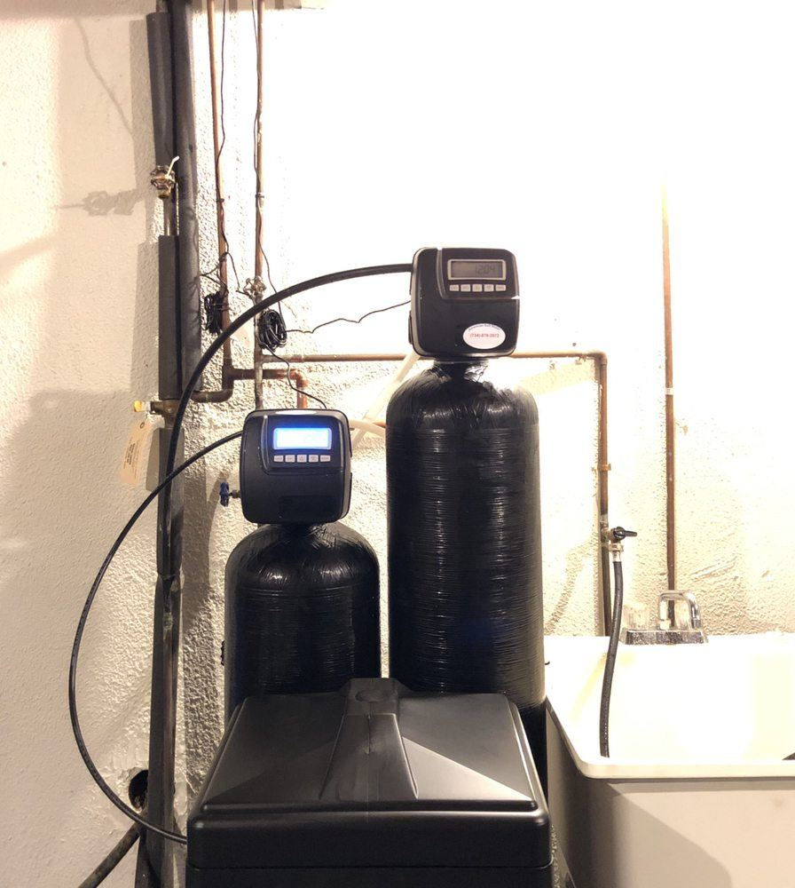

Water softeners
Hard water leaves scale in your pipes, water heater, and dishwasher, and it makes soap work harder. A softener swaps out the calcium and magnesium so fixtures stay clean and appliances last longer. We offer single-tank, twin-tank, and refurbished units.
- Ends white crust and spotty dishes
- Softer skin, hair, and laundry
- Protects water heaters and appliances